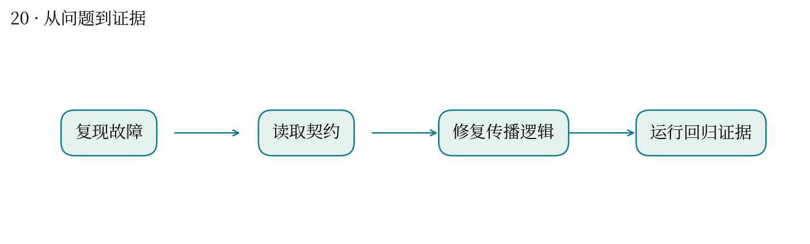

当上游证据改变，哪些下游结论必须重新检查？
最高分快照：100.0 · 2026-10-12T01:11:24+08:00
溯源服务维护证据、状态与依赖关系。错误的状态传播可能让已失效的结论继续显示为可信。
以 contract.md 为规范，从 INCIDENT.md 定位故障，修复校验、状态维护和影响分析，并加入回归用例。
历史提交 51685 为 100 分。报告强调故障触发条件和修复后行为，避免只展示测试通过数量。
图中有依赖不代表传播规则自动正确；删除、循环依赖和重复更新都需要明确契约。
与你维护 WDL/Nextflow 工作流很接近：上游文件或参数改变，应知道哪些结果需要重算。
回归测试覆盖的是已设计的故障条件，不能证明所有未来输入都正确。

| attempt | 提交时间 | 分数 | 状态 |
|---|---|---|---|
| 51685 | 10-10 23:27:27 | 100.0 | 已出分 |
源文件 SHA256 见 证据清单；用 scripts/build.py 重建图表。